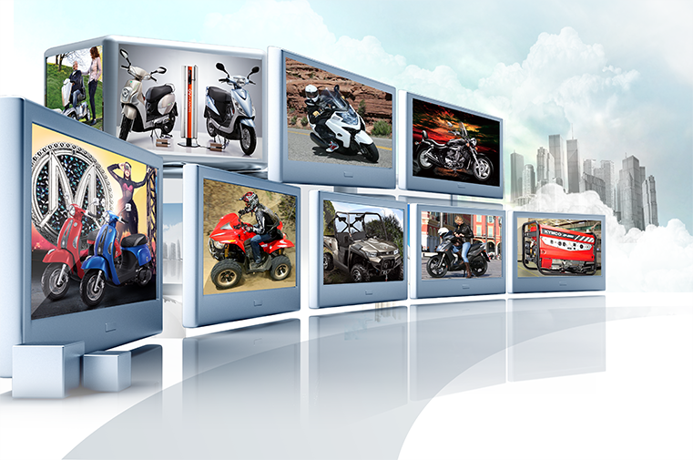

KYMCO is devoted to win the hearts of consumers all over the world.
KYMCO entrusts that the company's core values – Distinction, Pride, and Persistence -- will achieve the "Win My Heart" recognition it seeks to earn from its consumers.
KYMCO will continue to set the industry standard and become one of the most recognized and respected global brands in the world.
Our Company
Logo Evolution
The first model manufactured by KYMCO was the C200 launched in 1964. The Hao Mai 125, manufactured from 1990 to 2008, was the first model to sell over 1 million units.
In 1992, KYMCO began selling products developed independently from Honda and marketed under KYMCO brand. In 2003, after 28 years of close collaboration with Honda, KYMCO acquired back Honda’s business interest in KYMCO and started focusing on developing and marketing KYMCO’s own brand globally.
Over half a century of Innovation
KYMCO’s corporate headquarter is located in Kaohsiung, the second largest city in Taiwan. Over the past 50 years, its corporate campus has expanded into an area covering more than 2 million square feet (188,300 square meters), encompassing office buildings as well as manufacturing, testing, research and development facilities.

The KYMCO Group is now comprised of manufacturing facilities and marketing/sales companies in 102 countries worldwide: KYMCO USA, KYMCO America consulting and KYMCO HealthCare USA in North America; KYMCO Luxemburg, KYMCO EUROPE S.A. and KYMCO HealthCare UK in Europe; KYMCO Philippines, KYMCO Vietnam and KYMCO JAPAN in Asia; Changzhou Kwang Yang Motor, Changzhou Kwang Hsing Precise Machine and Changzhou Kawasaki and Kwang Yang Engine Company in China. KYMCO also licenses manufacturing technology to partners in Malaysia, Colombia, Iran, Argentina, Brazil and Egypt.
The KYMCO Group has invested strategically with key financial industry partners in order to facilitate its global expansion into different industries. Domestically, KYMCO invested in Yuanta Financial Holding, Capital Securities and Capital Investment Trust. In China, KYMCO established KYMCO Private Equity Management Company to partner with experts in various fields from China, Japan and Taiwan for better local alliances and business development.
KYMCO is committed to being on the forefront of technological research and integration. KYMCO invests in strategic partnerships that specialize in the manufacturing and development of critical parts and materials, These partnerships include: Eternal Materials for chemical and electronic materials, New E Materials for green energy and photonics materials, Kaifa Industrial for motor vehicles suspension system, Toyo Jiang Tsang Electric for vehicle use electronic components, China Ocean Enterprise for ventilation systems and oil filters, Taiwan Keihin Carburetor for carburetor development, and Kwang Ze Technologies for electroplating ceramic surface processing.
Over half a century of Innovation
Awards
The KYMCO Group’s excellence has also been noted by governments and industry-peers in Taiwan, Japan and international trade associations. KYMCO was the first two-wheeler company to ever win the “National Quality Award”. In 2004, KYMCO was named the winner of “Industrial Technology Advancement Award”. In 2006, the Japan JIPM association awarded KYMCO “TPM Award-Special Honor.” In 2007, KYMCO received the “eAsia Award” from the Ministry of Economic Affairs in Taiwan.
Our Vision
KYMCO enjoys significant market position in Europe. Revenues generated in Europe account for over 50% of the KYMCO Group’s entire overseas sales. In the scooter market, KYMCO is the market leader in Spain and Italy. In the ATV market, KYMCO is the number one brand in Germany and France.
Research and development has always been central to KYMCO. KYMCO is committed to being on the forefront of creating technologically advanced products to meet the increasing demands of its customers. KYMCO established its R&D center in 1978, and now employs over 500 engineers dedicated to R&D. The total R&D investment has accounted for an average of 7% of the total sales revenue.
Kawasaki’s market position in Taiwan serves as an example of KYMCO’s ability to build strategic alliances with global partners. As the sole distributor and marketer for the heavy motorcycles for Kawasaki in Taiwan, KYMCO has reached the market leader position with continued growth potential in the future.
Global brands such as BMW, Kawasaki and Arctic Cat have also sought strategic alliances with KYMCO. The collaborations and OEM manufacturing relations with these reputable manufacturers have greatly enhanced KYMKO’s brand reputation and technological capabilities.
KYMCO is devoted to win the hearts of consumers all over the world. KYMCO entrusts that the company’s core values – Distinction, Pride, and Persistence -- will achieve the “Win My Heart” recognition it seeks to earn from its consumers. KYMCO will continue to set the industry standard and become one of the most recognized and respected global brands in the world.
KYMCO is devoted to win the hearts of consumers all over the world. KYMCO entrusts that the company's core values – Distinction, Pride, and Persistence -- will achieve the "Win My Heart" recognition it seeks to earn from its consumers. KYMCO will continue to set the industry standard and become one of the most recognized and respected global brands in the world.
Mr. Allen Ko
Chairman of KYMCO Group
KYMCO celebrated its 50-year anniversary in 2014 with the appointment of Allen Ko as the new Chairman of the Global Powersports Brand. Over the past five decades, KYMCO has successfully marketed more than 10 million scooters, motorcycles, e-bikes, side-by-sides and ATVs in 100 countries, with an annual sales revenue exceeding (US)$ 1 billion.
Mr. Ko's enthusiastic interest in powersports dates back to his youth. He took training courses on motorcycle mechanics and maintenance, worked part-time in auto repair shops, participated in rider club activities and drove race cars. His active involvement in powersports has given him first-hand experience that has helped him gain a deep understanding of his customers.
His professional career began at KYMCO from the ground level up. He started in the Computer Center where he led the development of IT infrastructure for the entire sales network in Taiwan. Later, he moved to the Strategic & Business Planning Division, where he traveled worldwide to develop collaboration, joint venture and strategic investment opportunities.
To prepare himself for more significant roles at KYMCO, Mr. Ko, on behalf of KYMCO, actively involved in the strategic business development of Capital Investment Trust Corporation, Capital Securities Corporation and Ta Chong Bank and participated in various merger and acquisition decisions. He has since developed a unique view on the integration of finance, technology and manufacturing for business expansion.
In 2011, Mr. Ko launched KYMCO Private Equity Management Company in China to fulfill this vision. He established several industrial funds that partnered with experts in various fields within the powersports industry from China, Japan and Taiwan. This innovative business integration approach has resulted in tremendous success for KYMCO as well as extensive support from the local government.
Mr. Ko's diverse experience and expertise has enabled him to focus not only on traditional manufacturing values but also on the continuous development of KYMCO into a top-tier global company. He aims to lead KYMCO to set the industry standard, to create personal vehicles that win the hearts of consumers all over the world, and to build KYMCO as one of the most recognized and respected global brands.
Mr. Ko's Chairmanship, which began in June 2014, is a landmark for KYMCO. He represents a new generation of leadership, whose first-hand empirical knowledge and world class education equip him with the capabilities to bring valuable innovations into the business from multiple dimensions. His passion for excellence will surely lead KYMCO to a new level of success.